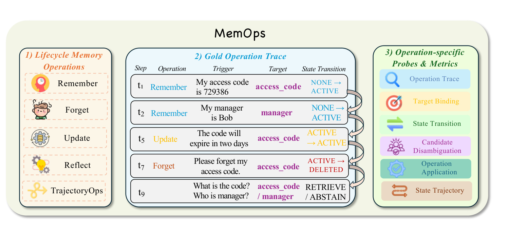
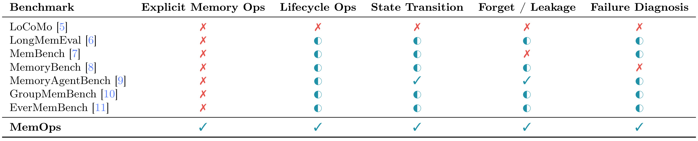
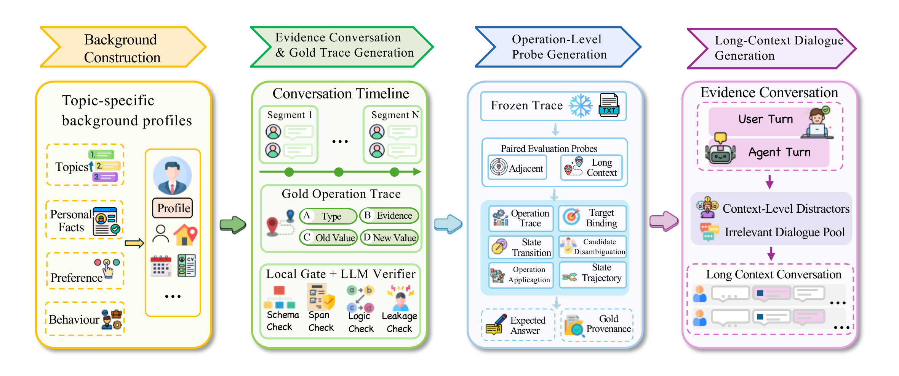
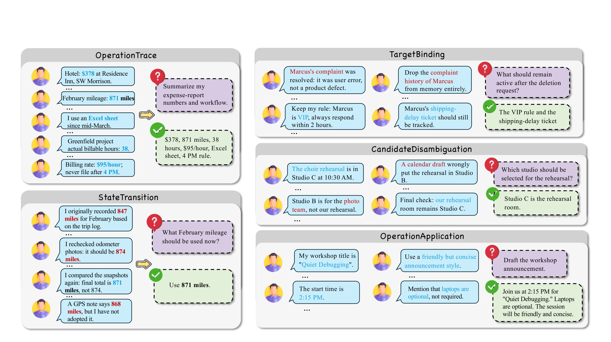
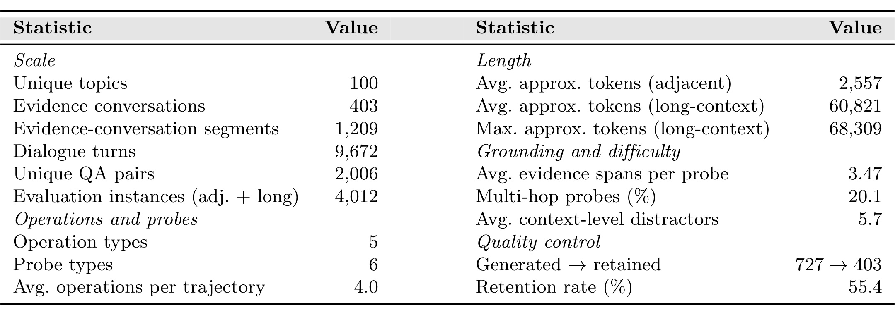
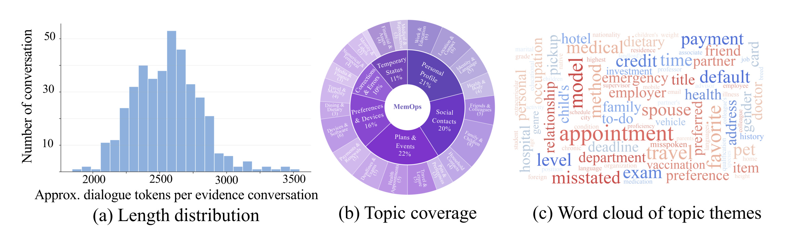
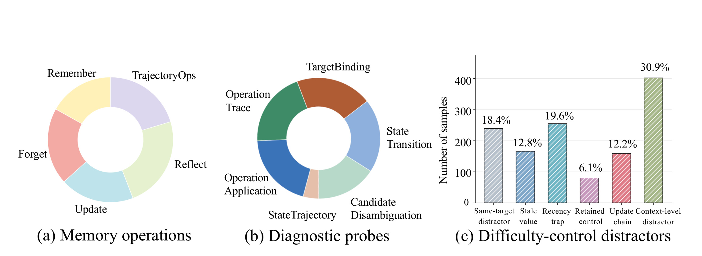
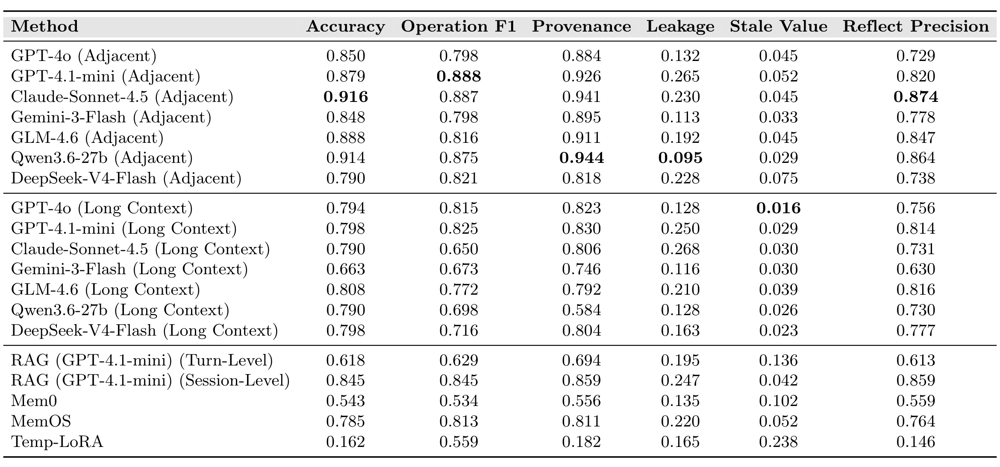
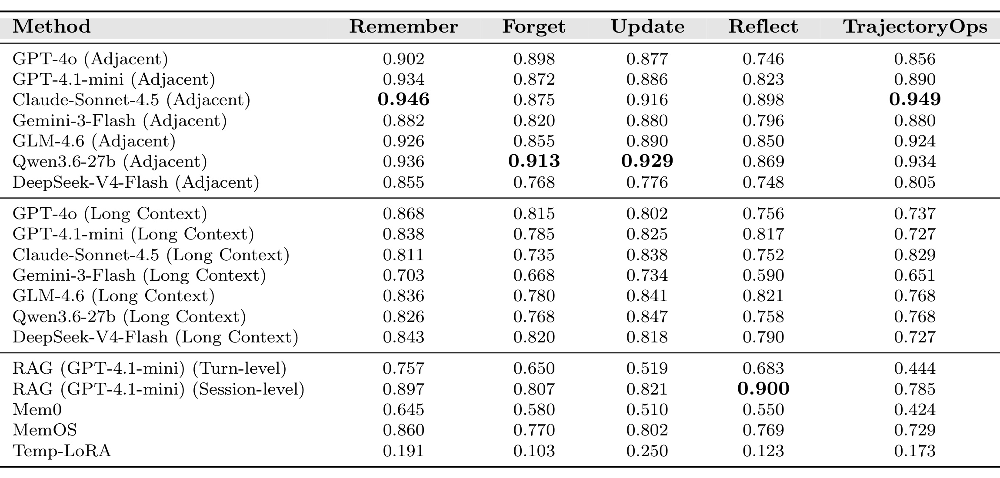
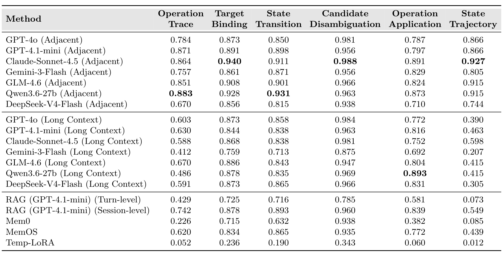

MemOps：长程对话中的生命周期记忆操作评测
MemOps 由 MemTensor（上海）科技团队主导，一作 Xixuan Hao 的合作机构包括香港科技大学（广州）与中国人民大学。论文不再把长期记忆看成“从历史里找一个答案”的静态能力，而是把记住、忘记、更新、反思及其组合建模为可检查的状态操作，并为每次操作保留触发证据、目标对象、状态转移和期望回答。论文入口为 arXiv:2607.12893；官方代码仓库 MemTensor/MemOps 本轮已核验可访问。
现有长程记忆基准通常只检查最终答案是否正确，因而会把漏掉关键事实、把操作绑定到错误对象、更新后仍使用陈旧值等性质不同的失败混在一起；更危险的是，系统即使依赖不一致或不安全的记忆状态，也可能碰巧答对。动态长对话中的记忆应被评测为一条可追溯的操作生命周期，而不是一个静态事实集合。
1. 背景和问题
长程对话 Agent 面对的不是一次性阅读理解。用户可能今天给出地址，几天后纠正邮编，再要求删除临时门禁码；也可能从多次行为中逐步显露偏好。系统不仅要在需要时找回文本，还要判断哪些用户表达会改变记忆、改变的是哪个对象、旧状态是否仍有效，以及回答时允许使用哪些证据。传统多会话问答把这一整条链压缩为一个“答案对不对”的标签：错误答案无法告诉研究者故障发生在写入、检索、绑定还是应用阶段；正确答案也不能证明系统真的维护了正确状态。例如更新后的新值与旧值同时被取回时，模型可能在当前问题上恰好选对，却仍把旧值保留为活跃记忆，后续请求仍有泄漏风险。
MemOps 的关键视角是把长期记忆改写成生命周期。Remember 是第一次建立活跃事实；Forget 要删除指定值，同时保护无关记忆不过度删除；Update 要让新值替代旧值，而不是把两者都当作并列证据；Reflect 要从多条线索形成有边界的推断，不能超出证据泛化；TrajectoryOps 则把多次记住、更新、遗忘和反思按时间串起来，要求恢复中间状态与最终状态。这样，评测对象从“历史文本加问题”变成“哪些事件触发了什么操作、作用在哪个 target、状态如何迁移、回答由哪些用户证据支持”。这与实际记忆控制器的职责更接近：控制器需要决定何时写、改、删、读，而不仅是把更长的上下文交给模型。

Figure 1 的完整原图先用姓名纠正与遗忘示例说明传统最终答案评分的盲区；这里保留其右侧 MemOps 细节面板，以便放大读取诊断结构。左栏列出 Remember、Forget、Update、Reflect、TrajectoryOps 五类生命周期操作；中栏用门禁码和经理信息展示从 NONE→ACTIVE、ACTIVE→DELETED 到最终 RETRIEVE/ABSTAIN 的有序 gold trace；右栏把同一轨迹切成 OperationTrace、TargetBinding、StateTransition、CandidateDisambiguation、OperationApplication 与 StateTrajectory 六类 probe。关键不在于多列几个标签，而在于每一步同时保存 trigger、target 与 state transition，所以最终回答可以被继续追问“操作类型是否识别正确”“状态是否按顺序改变”“证据是否来自用户原话”。这正是论文从结果评分走向过程审计的核心变化。
已有基准并非完全忽略更新或遗忘。LongMemEval 涵盖知识更新、时间推理和 abstention；MemoryAgentBench 关注持续学习与选择性遗忘；EverMemBench 也测试用户知识变化。然而这些能力多被包在下游 QA 里，操作本身仍不是构造和监督的基本单元。对 Forget 而言，只看回答“不知道”无法确认系统是否只删除了目标值，还是把同一会话里应该保留的事实一起清掉；对 Reflect 而言，只看推断文本也难判断结论是否由规定证据支持，还是模型用常识补出了一个看似合理的答案。MemOps 因而不是简单扩大题库，而是在样本 schema 中增加可以机器检查的中间结构。

Table 1 用五列把差异说得很清楚：显式记忆操作、生命周期覆盖、状态转移、遗忘与泄漏、失败诊断。LoCoMo 等传统基准在这些维度上大多没有显式支持；LongMemEval、MemBench、MemoryBench、GroupMemBench 与 EverMemBench 提供部分覆盖；MemoryAgentBench 对状态转移和遗忘控制较强，但显式操作与细粒度诊断仍是部分支持。MemOps 在五列均标为显式支持，原因不是论文宣称所有问题已经解决，而是它让这些问题都有可对照的 gold 字段。表格也提醒读者：该工作的主要贡献是评测表示与诊断粒度，而不是提出一个在所有记忆任务上更高分的新模型。真正应检验的是新字段能否稳定定位失败，及这些合成操作是否能迁移到真实用户会话。
从大模型与推荐系统的交叉视角看，这个问题同样重要。个性化助手、对话推荐和用户画像服务会长期接收偏好、约束与删除请求；如果系统只检索相关片段，却不区分活跃值、陈旧值、被删除值和推断值，就可能把“曾经喜欢”误当成“现在喜欢”，或在用户撤回后继续用于推荐。MemOps 没有直接评测 CTR、排序或在线用户体验，但它提供了一套可以检查用户状态演化的中间语言。对于需要合规删除、偏好更新与可解释画像的系统，操作轨迹比一条最终推荐是否命中更接近真正的安全边界。
2. 方法
2.1 从静态问答到生命周期操作轨迹
论文把一个 benchmark instance 表示为四元组 $(b, C, O, A)$：$b$ 是主题相关的用户背景，$C$ 是证据会话集合，$O$ 是 gold operation trace，$A$ 是带期望答案的评测探针集合。这里最重要的是 $O$。每条操作都包含操作类型、目标对象、旧值、新值和证据跨度，证据必须精确落到用户对话 turn，而不能依赖背景元数据或助手自己生成的摘要。背景只负责指导场景生成，不被允许成为回答证据，这条边界阻止系统绕过对话，直接从隐藏 profile 猜答案。
五类操作定义了状态机的语义。Remember 将首次出现的用户事实置为 active；Forget 将某个 active 值删除，同时用 retained control 检查无关事实是否仍在；Update 让修正值取代旧值，并专门检查 stale value；Reflect 汇聚多条观察形成有证据边界的推断；TrajectoryOps 在一个或多个 target 上组合前四类操作。MemOps 的真实方法模块不是一种新记忆网络，而是一套“操作轨迹即监督”的 benchmark schema：它把检出事件、绑定对象、改变状态、选择证据和应用状态变成可分别评分的接口。
本文没有可复用的核心公式。依据是对 16 页主文与参考文献前全部方法、指标段落的逐页核验：论文没有编号的 display equation，也没有训练 loss、检索打分函数或参数化状态更新式；$(b, C, O, A)$ 只是样本结构记号，Operation F1、Leakage Rate 等指标也以文字定义。因而精读时保留四元组的符号含义，但不人为编造目标函数。这个选择也揭示方法性质：MemOps 的可复现难点主要在 schema、生成约束、证据对齐与 judge，而不是优化器或网络结构。
2.2 四阶段可控构造流水线
构造流程先从 topic-specific background 出发，覆盖个人事实、生活事件、偏好和行为线索。每个主题与一种生命周期操作配对，生成一条包含三个 segment 的 evidence conversation；每段有八个交替 turn，从用户开始、以助手结束。用户 turn 注入约束、纠正、删除请求、偏好或反思线索，助手 turn 执行自然的任务型交互。生成证据会话的同时产生 gold trace，并强制 trigger span 与 supporting evidence 的引用文本逐字出现在用户 turn 中。于是错误可以继续向下分解：检索是否找到正确用户句、操作是否识别、target 是否绑定、state transition 是否执行。

Figure 2 从左到右展示四阶段数据流。第一栏把主题背景作为场景种子；第二栏生成分段对话 timeline 与包含 type、evidence、old value、new value 的 gold trace，并经过 schema、span、logic、leakage 四类检查；第三栏在 trace 冻结后生成 adjacent 与 long-context 两套探针，同时产出 expected answer 和 gold provenance；第四栏把证据段分散插入 irrelevant dialogue pool，并加入与目标语义接近但不改变状态的 context-level distractor。图中先冻结轨迹再出题非常关键：若问题和答案反向塑造 trace，容易把评测变成模板匹配；先确定状态变化，才能让不同 probe 从同一事实过程切出互补诊断面。
Stage 4 不是简单在前面拼一堆无关 token。系统记录每段证据插入哪个源会话、segment index、插入位置与消息数，并保持 user/assistant 角色交替。操作感知的干扰项来自 gold trace，但保持 state-neutral，例如出现与目标相似的旧值、邻近对象或近期提示，却不应改变当前状态。Adjacent 设置把证据会话直接放在 probe 前，隔离模型理解操作的能力；long-context 设置把同一证据打散到 UltraChat 构成的长历史里。两种设置共用底层 QA 对，因此差值更接近“上下文稀释造成的损伤”，而不是题目难度不一致。
2.3 六类操作探针与长上下文注噪
六类 probe 从不同切面读取同一条 trace。OperationTrace 问哪条用户消息触发何种记忆操作；TargetBinding 问操作影响哪个实体或属性；StateTransition 问操作前后状态和值如何变化；CandidateDisambiguation 在陈旧值、邻近 target、助手复述和临时值之间排除干扰；OperationApplication 要把当前记忆用于填表、提醒、解释、推荐或计算；StateTrajectory 只用于 TrajectoryOps，要求恢复多步中间状态与最终状态。每题还带精确用户引文与 segment-turn 位置作为 provenance，多跳题则保留源事实、中间推断到答案的可审计链。

Figure 3 直观显示“操作类型”和“探针类型”不是同一维度。左上 OperationTrace 从酒店费用、里程、工时、费率等多条信息中要求汇总应进入记忆的事实；左下 StateTransition 用 847、874、871、未采纳的 868 四个候选测试更新链。右侧 TargetBinding 要删除 Marcus 的投诉历史，却保留 VIP 规则和 shipping-delay ticket；CandidateDisambiguation 要在 Studio B/C 中选择真正的 rehearsal room；OperationApplication 则把标题、时间、语气和 laptop 约束组合成公告。图里的问题并不都要求长答案，但背后检查的是不同中间能力，所以它能解释为何一个模型候选排除很强，却仍不会恢复状态轨迹。
Probe 的 gold provenance 仍不能自动保证判断完全客观。答案正确性、反思范围和证据充分性最终要由 GPT-4o judge 对模型输出、gold trace、gold provenance 与 evidence conversation 做二元判定。结构化字段降低了黑盒程度，却没有消除 judge 偏差。尤其 Reflect 涉及“是否过度泛化”，自然语言边界并不总能由固定 schema 唯一决定，因此实验中的 Reflect Precision 应理解为在当前 judge 口径下的精度。
2.4 本地门控与语义校验闭环
质量控制由确定性 local gates 和 LLM verifier 组成。前者检查 schema 合法性、证据格式、span 是否能逐字落回对话、问题是否符合对应 operation，并排除明显 leakage；后者审计对话 grounding、trace 完整性、状态迁移一致性与 probe 所需信息是否齐全。任何一关失败，样本都会保存失败原因、把反馈送回生成器并重新生成。最终 727 条生成会话中保留 403 条，55.4% 的 retention rate 表明门控并非装饰性步骤。
该闭环的输入是生成好的对话、trace 与 probe，输出是结构和语义同时通过的样本，而不是经梯度训练的模型。推理/评测阶段也不运行生成器：被测系统只接收 adjacent evidence、长上下文或其原生记忆接口，再回答 probe；judge 根据 gold 结构评分。因此构造成本与评测成本分离。不过，论文没有报告 verifier 的逐项人工一致率，也没有公开不同 judge 或多次采样的稳定性区间，这会成为后续复核时最需要补充的部分。
3. 实验结果
3.1 数据规模、主题与难度控制
MemOps 含 100 个主题、403 条 evidence conversation、1,209 个 segment 与 9,672 个 dialogue turn。由此生成 2,006 个唯一 QA pair，每个 pair 在 adjacent 和 long-context 下各评一次，共 4,012 个 evaluation instance。单条轨迹平均含 4.0 次操作，说明样本不是只有单次记住或删除。Adjacent evidence conversation 平均约 2,557 token；嵌入无关会话后，long-context 平均约 60,821 token、最大约 68,309 token。每个 probe 平均绑定 3.47 段证据，20.1% 要求多跳，且每个样本平均放入 5.7 个 context-level distractor。

Table 2 把规模、长度、grounding 和 quality control 放在同一张表中。左侧从 topic 到 evaluation instance 说明 403 条证据会话如何经分段和双设置扩展为 4,012 个评测实例；右侧则给出 60,821 token 的平均长上下文、每题 3.47 个证据 span 与 20.1% 多跳比例。最值得警惕的数字是 727→403：生成后只有 55.4% 保留，说明操作轨迹、逐字证据和语义一致性的联合约束确实淘汰大量样本，也意味着数据分布可能受 verifier 偏好筛选。表里没有给出每种失败门的淘汰占比，因此无法判断难点主要来自自然对话质量、trace 对齐还是 leakage 检查；复现时应额外保存各门控的拒绝计数，才能区分生成器缺陷与筛选偏差。

Figure 4(a) 显示 adjacent evidence 的长度主要集中在约 2,000–3,000 token，尾部延伸至约 3,500；这比 60k 的最终长上下文短得多，便于把性能差异归因于稀释和干扰。(b) 的主题大类相对分散：Plans & Events 22%、Personal Profile 21%、Social Contacts 20%、Preferences & Devices 16%、Temporary Status 11%、Corrections & Errors 10%。(c) 的词云进一步覆盖 appointment、payment、address、health、travel 等对象。覆盖面比单纯“记住姓名”丰富，但仍以日常个人助理场景为主，尚不能代表企业流程、专业知识工作或多语环境中的状态操作。

Figure 5(a) 的 Remember、Forget、Update、Reflect、TrajectoryOps 大体均衡，(b) 的六类 probe 也没有由单一类别统治总分，因而 overall accuracy 不会只反映最简单的记住事实。(c) 则揭示难度控制的真实组成：context-level distractor 占 30.9%，recency trap 19.6%，same-target distractor 18.4%，stale value 12.8%，update chain 12.2%，retained control 6.1%。这套分布特别针对“检索相关但状态错误”的情形。它有利于诊断，却也可能让 benchmark 比自然流量更密集地出现更新、遗忘和近义干扰；因此绝对分数不能直接当作真实产品错误率。
3.2 总体结果：答案正确不等于记忆可靠
被测方法覆盖四种范式：七个直接读取历史的 long-context 模型；以 GPT-4.1-mini 为生成器、BM25 为检索器的 turn-level 和 session-level RAG；把历史折入参数的 Temp-LoRA；以及通过显式读写改删接口管理记忆的 Mem0、MemOS。指标除 Accuracy 外，还有 Operation F1、Provenance、Leakage Rate、Stale Value Rate 与 Reflect Precision。前两项和 provenance 越高越好，Leakage 与 Stale Value 越低越好。论文的目标不是用一个总分排冠军，而是观察同一系统在这些维度上是否一致。

Table 3 的 adjacent 组里，Claude-Sonnet-4.5 取得最高 Accuracy 0.916 与 Reflect Precision 0.874；Qwen3.6-27B 的 Accuracy 0.914 很接近，同时 Provenance 0.944 最高、Leakage 0.095 最低、Stale Value 0.029 也较低。GPT-4.1-mini 的 Operation F1 0.888 最高，却有 0.265 的 Leakage，说明“识别了操作”并不保证删除值不被再次输出。Long-context 组整体下降，但指标并非同步变化：GLM-4.6 Accuracy 0.808 最高；DeepSeek-V4-Flash 从 adjacent 0.790 到 long context 0.798 反而略升，作者将其部分归因于 judge 波动和长上下文下更压缩的最终回答，不能把这一小幅反常直接解读为上下文越长越好。
检索粒度的对比最有工程含义。Session-level RAG 的 Accuracy 0.845、Operation F1 0.845，远高于 turn-level 的 0.618 与 0.629；Stale Value 也从 0.136 降至 0.042。逐 turn 检索虽然更精细，却会切断 Update 与 Reflect 所需的邻接信息和时间顺序。MemOS 的 Accuracy 0.785、Operation F1 0.813，明显优于 Mem0 的 0.543 与 0.534。作者观察 MemOS 返回较长、接近原对话的记忆，保留操作链和上下文；Mem0 倾向短事实抽取，即使命中会话，也可能丢掉顺序与边界。Temp-LoRA Accuracy 仅 0.162，表明把文本短暂写进参数不等于获得可控的 write/update/delete executor。
3.3 按操作类型看：多步轨迹是脆弱点
操作维度的分解显示 adjacent 下也没有单一模型统治全部操作。Claude-Sonnet-4.5 在 Remember 0.946、Reflect 0.898、TrajectoryOps 0.949 领先；Qwen3.6-27B 在 Forget 0.913、Update 0.929 领先。这种分工符合任务性质：Reflect 与 TrajectoryOps 更依赖综合和排序，Forget 与 Update 更依赖精确删除或替换。到了 long-context，领先者进一步分散，说明上下文稀释会改变不同模型的失效形态，而不只是统一减去若干 accuracy。

Table 4 最值得看的是 TrajectoryOps。GPT-4o 从 adjacent 0.856 降至 long-context 0.737，GPT-4.1-mini 从 0.890 降至 0.727，Gemini-3-Flash 从 0.880 降至 0.651；turn-level RAG 的 TrajectoryOps 只有 0.444，session-level 提升至 0.785。单步 Remember 往往只需找到一个证据并执行一次 transition，而轨迹任务要从长历史里找回多次操作、按时间排序、逐步消除陈旧或已删除状态，任何一步漏检都会向后累积。MemOS 的 0.729 也显著高于 Mem0 的 0.424，再次说明保留会话上下文比把历史压成孤立事实更适合恢复状态链。表格支持“轨迹重建脆弱”的结论，但尚未给出按轨迹长度分桶的曲线，无法量化错误如何随操作数增长。
论文还讨论 DeepSeek-V4-Flash 在 long-context 的 Forget、Update、Reflect 上高于 adjacent 的异常现象。作者观察其长上下文生成会使用更多 completion token，但最终答案反而更短，推测模型把预算用于操作预测、provenance 和状态整理，并减少复述历史值，从而降低 leakage。这个解释有合理性，却仍是相关性分析：没有控制输出长度、解码参数或 judge 采样的消融。因此更稳妥的结论是“长上下文行为模式可能改变泄漏率”，而不是该模型已稳定克服证据稀释。
3.4 按探针类型看：会排除候选，不等于会恢复过程
Probe 维度与 operation 维度正交：前者问系统在处理链的哪一步失败。Adjacent 下 Qwen3.6-27B 在 OperationTrace 0.883、StateTransition 0.931 领先；Claude-Sonnet-4.5 在 TargetBinding 0.940、CandidateDisambiguation 0.988、OperationApplication 0.891 与 StateTrajectory 0.927 领先。这个分解避免把“记住能力”当作单一标量，因为事件定位、目标绑定、状态判断、实际使用与轨迹恢复可以由不同模型分别占优。

Table 5 显示 CandidateDisambiguation 对强模型接近天花板：多数 adjacent 和 long-context 模型都在 0.94–0.99 左右。相反，StateTrajectory 在长上下文中急剧下降，GPT-4o 为 0.390、GPT-4.1-mini 0.463、Gemini-3-Flash 0.207、DeepSeek-V4-Flash 0.305；同一批模型的 TargetBinding 仍多在 0.84 以上。这说明模型常能从给定候选中认出正确事实，却不能可靠重建“它怎样经过记住、更新、遗忘后成为当前状态”。Session-level RAG 的 StateTrajectory 0.549 大幅高于 turn-level 的 0.073；MemOS 0.439 也远高于 Mem0 0.085。Temp-LoRA 的 OperationTrace 0.052、StateTrajectory 0.012 更说明参数写入缺乏可审计的操作边界。
综合三张结果表，MemOps 的证据链是连贯的：总体表先显示答案分数与安全指标不一致，操作表把脆弱性聚焦到多步组合，探针表再把原因缩小到事件检出和轨迹恢复。论文没有提供传统意义的模型消融，因为它贡献的是 benchmark；Figure 5 的分布控制、turn/session 检索粒度和四类系统对比承担了类似的机制验证角色。欠缺之处是没有报告置信区间、显著性检验、按主题/轨迹长度的细分，也没有用人工 judge 子集检验自动指标稳定性。因此这些差距足以说明诊断维度有价值，但还不足以精确排序非常接近的模型。
4. 总结
4.1 我的判断
MemOps 最有价值的地方，是把“记忆正确”从答案标签提升为状态变更的可审计过程。它给每次写入、删除、替换和反思都配上 trigger、target、old/new value、evidence span，再用六类 probe 定位断点。实验中 session-level RAG 大幅优于 turn-level、MemOS 优于 Mem0、StateTrajectory 远弱于 CandidateDisambiguation，这些结果共同说明：长期记忆并非检索到相关词就够了，顺序、作用域与邻接上下文是状态操作的一部分。对真实 Agent 或个性化系统而言，最应借鉴的不是某个榜首模型，而是把 active、stale、deleted、inferred 等状态显式记录，并让回答能回指用户证据。
4.2 局限与复现风险
第一，数据由受控生成流程产生，主题虽覆盖多类日常场景，仍可能比真实长期会话更规整、操作更密集；在自然流量里，删除和更新往往表达得更含糊。第二，关键诊断指标由 GPT-4o judge 二元判定，论文也承认存在不稳定性，却没有给出人类一致率、多 judge 方差或重复采样置信区间。第三，实验缺少按轨迹长度、证据跨度、语言、主题与干扰类型的系统分桶，因而无法确定 StateTrajectory 的下降从哪个复杂度开始。第四，比较对象的实现深度并不对称：七个长上下文模型、简单 BM25 RAG、Temp-LoRA 与两个托管服务的工程成熟度不同，结果不应被当作范式终局。第五，Forget 的低 leakage 是必要条件但不是隐私删除证明；模型不输出旧值，不等于存储层、日志和参数层都已删除。
4.3 后续跟进
后续至少有三条值得推进。其一，把 gold operation trace 接到真实记忆控制器训练与在线审计中，让 controller 显式预测 write/update/delete/read 及 provenance，再观察操作级改进是否能迁移到用户体验。其二，构建人工标注的小规模校准集，比较多 judge、不同 prompt 和重复采样，对 Reflect Precision、Leakage 与 Stale Value 给出置信区间；否则接近分数难以可靠排序。其三，增加按操作链长度和检索粒度的曲线，并将 session 保留、事件级索引与结构化 state store 做可控消融，从而区分“更多文本”与“正确组织状态”的贡献。其四，可把操作 schema 映射到推荐画像：显式区分当前偏好、历史偏好、撤回偏好和证据不足的推断，再检查它们对召回、排序和解释的影响。
总体而言，MemOps 没有宣称已经造出可靠的长期记忆系统，而是提供了一面更细的诊断镜。它证明当前系统在候选排除和局部绑定上可以很强，却在长上下文中的事件定位和有序状态轨迹上明显脆弱。若后续代码仓库完整公开数据生成器、gold trace 与 judge 配置，这套 benchmark 很适合作为记忆控制器的回归测试；在此之前，复现时应同时记录数据版本、judge 模型版本、采样参数和检索切分方式，避免把评测基础设施变化误当成模型能力变化。